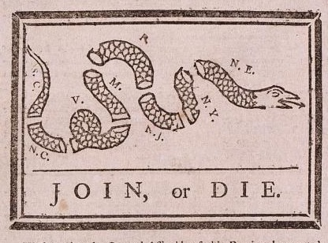

Total: 50 points. Part A is worth 15 points, Part B is worth 20 points, Part C is worth 10 points, Part D is worth 5 points. Write answers on this test. For Part C, answer in complete sentences and cite the sources by letter. For Part D, choose one prompt and write a complete essay.
Match each term to its description. Each description is used once.
| ___ | 1. Iroquois Confederacy | A. the first permanent English settlement in North America, founded in 1607 on the James River in Virginia by the Virginia Company |
| ___ | 2. Columbian Exchange | B. the British practice through much of the early 1700s of leaving the colonies largely to govern themselves while Britain attended to wars and politics in Europe |
| ___ | 3. encomienda | C. the transfer of plants, animals, diseases, people, and ideas between the Eastern and Western Hemispheres that began with the voyages of Columbus in 1492 |
| ___ | 4. fur trade | D. the English laws, beginning in 1651, that required colonial trade to travel in English or colonial ships and required certain colonial goods to be sold only to England |
| ___ | 5. Jamestown | E. the agreement signed aboard the Mayflower in 1620 by the Pilgrims, creating a government by the consent of the governed for the Plymouth colony |
| ___ | 6. Bacon's Rebellion | F. the treaty of February 1763 that ended the French and Indian War, giving Britain Canada and all French territory east of the Mississippi River except New Orleans |
| ___ | 7. Mayflower Compact | G. the Spanish system that granted a colonist the right to demand tribute and labor from Indigenous people in a given area, in return for supposed protection and Christian teaching |
| ___ | 8. Salem witch trials | H. the voyage across the Atlantic that carried enslaved Africans to the Americas, the middle leg of the Atlantic trade, made in crowded ships where disease and abuse killed many of those aboard |
| ___ | 9. William Penn | I. the league of five, later six, Native nations in present-day New York, joined under the Great Law to keep peace among themselves and deal jointly with outsiders |
| ___ | 10. Navigation Acts | J. the crisis of 1692 in Massachusetts in which accusations of witchcraft led to trials that hanged nineteen people and pressed one man to death before the colony repented |
| ___ | 11. Middle Passage | K. the religious revival movement that swept the colonies in the 1730s and 1740s, emphasizing personal faith and emotional preaching over church tradition and learning |
| ___ | 12. Stono Rebellion | L. the exchange central to French and Dutch colonization, in which Europeans traded manufactured goods to Indigenous hunters for beaver pelts and other furs |
| ___ | 13. salutary neglect | M. the uprising of September 1739 near Charleston, South Carolina, in which enslaved Africans seized weapons and marched toward Spanish Florida, after which the colonies tightened their slave codes |
| ___ | 14. Great Awakening | N. the Virginia uprising of 1676 led by Nathaniel Bacon, in which frontier settlers and former servants attacked Indigenous peoples and burned Jamestown, pushing great planters toward enslaved labor |
| ___ | 15. Treaty of Paris (1763) | O. the Quaker proprietor who received Pennsylvania's charter in 1681 and founded the colony as a holy experiment in government by his persecuted faith |
Choose the best answer for each question.
1. The Iroquois Confederacy joined five, later six, Native nations in present-day New York in order to
A. trade beaver pelts to French merchants on the St. Lawrence B. keep peace among themselves and deal jointly with outsiders under the Great Law C. build earthen mounds at a center of trade and ceremony D. elect representatives to the House of Burgesses
2. The deadliest part of the Columbian Exchange for the peoples of the Americas was
A. the arrival of horses, which changed hunting on the plains B. the arrival of wheat and cattle from Europe C. European diseases, which spread through populations that had little resistance to them and killed on a scale no army could match D. the printing of Columbus's letter across Europe
3. Under the encomienda system, a Spanish colonist received
A. the right to demand tribute and labor from Indigenous people in a given area, in return for supposed protection and Christian teaching B. fifty acres of land for every immigrant whose passage he paid C. a charter to govern a colony and draw its rents and fees D. a license to trade manufactured goods for beaver pelts
4. The exchange at the center of French colonization in North America was
A. tobacco grown for sale in England B. silver mined and shipped to Spain C. sugar grown on plantations in the islands D. manufactured goods traded to Indigenous hunters for beaver pelts and other furs
5. Jamestown, founded in 1607, was planted by
A. the Pilgrims, after signing a compact aboard the Mayflower B. the Virginia Company, a joint-stock company whose investors pooled their money and shared its risks C. William Penn, as a holy experiment for his persecuted faith D. Catholic orders founding a religious settlement
6. After Bacon's Rebellion of 1676, Virginia's great planters turned increasingly to enslaved African labor because
A. the Navigation Acts required enslaved labor on tobacco plantations B. indentured servants had stopped coming to Virginia altogether C. enslaved people were bound for life, harder to free, and easier to mark than former servants who had gained their freedom and could rebel D. the House of Burgesses had outlawed indentured servitude
7. The Mayflower Compact, signed aboard ship in 1620, created
A. a government by the consent of the governed for the Plymouth colony B. the first written constitution in English America C. an elected assembly for the Virginia colony D. a league of Native nations under the Great Law
8. Anne Hutchinson was tried and banished from Massachusetts Bay in 1637 and 1638 because
A. she argued that the king had no right to grant Indigenous land B. she was accused of witchcraft at Salem C. she printed attacks on the royal governor in a newspaper D. her teaching that faith alone brought salvation challenged the colony's ministers
9. William Penn founded Pennsylvania, beginning with its charter of 1681, as
A. a tobacco colony on the James River B. a trading town of many languages on the Hudson C. a holy experiment in government by his persecuted faith, the Quakers D. a viceroyalty governed from Mexico City
10. The Navigation Acts, beginning in 1651, required that
A. colonial trade travel in English or colonial ships and certain colonial goods be sold only to England B. every colony elect an assembly and vote its own taxes C. colonial settlement stop west of the Appalachian Mountains D. enslaved people's children be born free if baptized
11. Virginia's statutes of the 1660s rebuilt slavery as hereditary property by providing that
A. a child's status followed the father's condition and baptism freed the enslaved B. every enslaved person was freed after a term of seven years C. enslaved people could sue in the colony's courts D. a child's enslaved status followed the mother's, and baptism did not free an enslaved person
12. The Stono Rebellion of September 1739 was
A. a Virginia uprising of frontier settlers who burned Jamestown B. a march of printers demanding a free press in New York C. an uprising near Charleston in which enslaved Africans seized weapons and marched toward Spanish Florida, after which the colonies tightened their slave codes D. an attack on British forts by the nations of the Great Lakes
13. The Zenger trial of 1735 in New York ended when
A. the jury acquitted printer John Peter Zenger of seditious libel after his lawyer argued that true statements could not be libel B. the governor pardoned Zenger before the trial began C. the court changed the law of libel for every colony D. Zenger was banished to Rhode Island
14. George Whitefield's tours of the colonies during the Great Awakening
A. preached the sermon Sinners in the Hands of an Angry God at Enfield B. founded Rhode Island on religious toleration C. were held inside meetinghouses for church members only D. drew open-air crowds in the thousands and made him the colonies' first shared celebrity
15. The Treaty of Paris of February 1763 gave Britain
A. Louisiana and the lands west of the Mississippi B. Canada and all French territory east of the Mississippi River except New Orleans C. the right to settle west of the Appalachian Mountains D. France's sugar islands and its fur trade posts
16. Tenochtitlan, as the Spanish found it in 1519, was
A. the largest city of the Mississippian culture, known for its earthen mounds B. a farming town of the Haudenosaunee league C. the capital of the Aztec empire, built on an island in Lake Texcoco and one of the largest cities in the world in 1500 D. a Spanish viceroyalty governed from Mexico City
17. The headright system recruited laborers for Virginia by
A. granting fifty acres of land to any person who paid for an immigrant's passage to the colony B. paying wages in tobacco to every servant who finished a term C. granting a colonist the tribute and labor of Indigenous people in a given area D. sending prisoners to the colony for life
18. The figures of the Trans-Atlantic Slave Trade Database, stated as its estimates, put the Atlantic slave trade at
A. about 1.5 million people carried from Africa, most of whom survived B. some 12.5 million people carried from Africa between the 1500s and the 1800s, about 10.7 million of whom survived the crossing C. some 25 million people carried from Africa before 1700 alone D. about 500,000 people carried to England's mainland colonies, and no others
19. Salutary neglect, through much of the early 1700s, was the British practice of
A. taxing the colonies directly for their own defense B. closing the colonial assemblies and ruling by governor alone C. forbidding colonial trade with every port but London D. leaving the colonies largely to govern themselves while Britain attended to wars and politics in Europe
20. The Proclamation of 1763, issued in October of that year,
A. gave Canada to Britain and ended the French and Indian War B. forbade colonial settlement west of the Appalachian Mountains, to reserve the land for Indigenous peoples and prevent new frontier wars C. united the colonies under one government for defense D. required colonial goods to be sold only to England
Answer each question in complete sentences, citing the sources by letter.
Source A
Christopher Columbus, letter reporting his first voyage, written on the voyage home, 1493. From Christopher Columbus, 'Columbus Reports on His First Voyage,' 1493 (Gilder Lehrman Institute). Cuts are marked with ellipses in brackets.
“I have determined to write you this letter to inform you of everything that has been done and discovered in this voyage of mine. On the thirty-third day after leaving Cadiz I came into the Indian Sea, where I discovered many islands inhabited by numerous people. I took possession of all of them for our most fortunate King by making public proclamation and unfurling his standard, no one making any resistance. [...] Besides, this Hispana abounds in various kinds of species, gold and metals. [...] But when they see that they are safe, and all fear is banished, they are very guileless and honest, and very liberal of all they have. No one refuses the asker anything that he possesses; on the contrary they themselves invite us to ask for it. They manifest the greatest affection towards all of us, exchanging valuable things for trifles, content with the very least thing or nothing at all. [...] I gave them many beautiful and pleasing things, which I had brought with me, for no return whatever, in order to win their affection, and that they might become Christians and inclined to love our King and Queen and Princes and all the people of Spain; and that they might be eager to search for and gather and give to us what they abound in and we greatly need.”
A1. (1 point) According to Columbus, what did he do with the islands he reached, and for whom did he say he did it? Name the two public acts he says he performed.
A2. (2 points) Columbus writes that he gave the islanders many pleasing things for no return whatever. State the two purposes he says those gifts were meant to serve.
Source B
Olaudah Equiano, The Interesting Narrative, published in London, 1789. From Olaudah Equiano, 'The Interesting Narrative,' 1789 (Documenting the American South, UNC; from the London 1789 first edition; original spelling and punctuation preserved). Cuts are marked with ellipses in brackets.
“The stench of the hold while we were on the coast was so intolerably loathsome, that it was dangerous to remain there for any time, and some of us had been permitted to stay on the deck for the fresh air; but now that the whole ship's cargo were confined together, it became absolutely pestilential. The closeness of the place, and the heat of the climate, added to the number in the ship, which was so crowded that each had scarcely room to turn himself, almost suffocated us. This produced copious perspirations, so that the air soon became unfit for respiration, from a variety of loathsome smells, and brought on a sickness among the slaves, of which many died, thus falling victims to the improvident avarice, as I may call it, of their purchasers. [...] The shrieks of the women, and the groans of the dying, rendered the whole a scene of horror almost inconceivable.”
B1. (2 points) Name two conditions in the hold that Equiano describes, and state what those conditions brought on among the enslaved people aboard.
B2. (2 points) Equiano writes that many died as victims of the improvident avarice of their purchasers. Explain what he is blaming in that phrase, and state the sounds he closes the passage with.
Source C

Benjamin Franklin (attributed), Join, or Die, published in the Pennsylvania Gazette, May 9, 1754. Library of Congress.
From Benjamin Franklin (attributed), 'Join, or Die,' 1754 (Library of Congress). The bank record describes the image in these words: “A woodcut of a snake cut into eight segments, each labeled with the initials of a colony or region: S.C., N.C., V., M., P., N.J., N.Y., and N.E. Beneath the snake is a bold caption urging the colonies to unite.”
Transcript: "JOIN, or DIE." Segment labels: "S.C." "N.C." "V." "M." "P." "N.J." "N.Y." "N.E."
C1. (1 point) Into how many segments is the snake cut, and what does each segment stand for?
C2. (2 points) Explain the warning the cartoon makes to the colonies in 1754, the year the French and Indian War began. What does the cut snake claim will happen to colonies that stay divided, and what does the caption order them to do instead?
Choose one prompt and write a complete essay in the space below. Use specific evidence from the unit, and state the strongest point on the other side before you answer it.
Prompt 1. Judge whether 1763 was a triumph or a warning. Build your answer on the Treaty of Paris, Pontiac's Rebellion, and the Proclamation of 1763.
Prompt 2. Britain won the French and Indian War. Judge whether that victory solved the empire's problems or created them. Build your answer on the war's costs, the land settlement of 1763, and the part the colonies played in the war.
1. Iroquois Confederacy: I (Blueprint 1)
2. Columbian Exchange: C (Blueprint 2)
3. encomienda: G (Blueprint 3)
4. fur trade: L (Blueprint 4)
5. Jamestown: A (Blueprint 5)
6. Bacon's Rebellion: N (Blueprint 6)
7. Mayflower Compact: E (Blueprint 7)
8. Salem witch trials: J (Blueprint 8)
9. William Penn: O (Blueprint 9)
10. Navigation Acts: D (Blueprint 10)
11. Middle Passage: H (Blueprint 11)
12. Stono Rebellion: M (Blueprint 12)
13. salutary neglect: B (Blueprint 13)
14. Great Awakening: K (Blueprint 14)
15. Treaty of Paris (1763): F (Blueprint 15)
1. B (Blueprint 1)
2. C (Blueprint 2)
3. A (Blueprint 3)
4. D (Blueprint 4)
5. B (Blueprint 5)
6. C (Blueprint 6)
7. A (Blueprint 7)
8. D (Blueprint 8)
9. C (Blueprint 9)
10. A (Blueprint 10)
11. D (Blueprint 11)
12. C (Blueprint 12)
13. A (Blueprint 13)
14. D (Blueprint 14)
15. B (Blueprint 15)
16. C (Blueprint 1)
17. A (Blueprint 6)
18. B (Blueprint 11)
19. D (Blueprint 13)
20. B (Blueprint 15)
A1. Columbus writes that he took possession of all the islands for our most fortunate King, meaning Ferdinand of Spain, the king who had paid for the voyage. The two public acts he names are making public proclamation and unfurling his standard, with no one making any resistance. One point for the possession and the king together with both acts named. (Blueprint 2)
A2. Columbus states two purposes for the gifts. The first was to win the islanders' affection, so that they might become Christians and inclined to love the King and Queen and Princes and all the people of Spain. The second was that they might be eager to search for and gather and give to the Spanish what they abound in and Spain greatly needed, the gold and goods the passage names for Hispana. One point for each purpose stated from the source. (Blueprint 2)
B1. Equiano describes the hold's intolerable stench, the closeness of the place and the heat of the climate, a ship so crowded that each person had scarcely room to turn himself, copious perspirations, and air made unfit for respiration by loathsome smells. Those conditions, he writes, brought on a sickness among the slaves, of which many died. Full credit requires any two conditions from the passage and the sickness and deaths they brought on. (Blueprint 11)
B2. By the improvident avarice of their purchasers Equiano blames the reckless greed of the buyers who crowded the ship, the greed that packed people into the hold without provision for their lives. He closes the passage with the shrieks of the women and the groans of the dying, which he says rendered the whole a scene of horror almost inconceivable. One point for the blame explained and one point for both sounds named. (Blueprint 11)
C1. The snake is cut into eight segments. Each segment stands for a colony or region, labeled with its initials, S.C., N.C., V., M., P., N.J., N.Y., and N.E. One point for the number and what the segments stand for together. (Blueprint 15)
C2. The cartoon warns the colonies that divided they are a snake in pieces, dead and unable to act, at the opening of a war with France in North America. A colony standing alone could be defeated alone, and the cut pieces claim the colonies share one body and one fate. The caption orders the remedy in its own words, JOIN, or DIE, that the colonies unite, as Franklin's Albany Plan of Union proposed that same summer, for defense and for relations with Indigenous nations. Full credit requires the fate claimed for divided colonies and the union ordered, tied to the war of 1754. (Blueprint 15)
The essay is scored on the six part holistic scale below, whichever prompt the student chose. (Blueprint 15)
Score 5. A clear judgment is stated and held through the essay. At least three pieces of specific evidence from the unit are used accurately, the strongest point on the other side is stated fairly and answered, and the writing is organized in paragraphs with a conclusion that follows from the evidence.
Score 4. A clear judgment is stated and mostly held. Two or three pieces of specific evidence are used accurately, the other side is stated and answered, and the organization holds, with minor lapses in precision or development.
Score 3. A judgment is stated but drifts, or the evidence is specific in places and general in others. The other side is mentioned but answered thinly, or the answer to it is asserted rather than argued.
Score 2. The essay retells the events of 1763 without a judgment that the evidence is made to serve, or the judgment is stated but supported by only one accurate piece of evidence. The other side does not appear.
Score 1. The response is a fragment, a single point restated, or evidence is used inaccurately in ways that change its meaning. Little of the prompt is answered.
Score 0. The response is blank, off the prompt, or copies the prompt without answering it.
For Prompt 1, strong evidence includes the Treaty of Paris of February 1763 giving Britain Canada and the French lands east of the Mississippi, Pontiac's Rebellion taking British forts in the spring and summer of 1763, the Proclamation of October 1763 forbidding settlement west of the Appalachians, and settlers already crossing the line. For Prompt 2, strong evidence includes the war's cost in borrowed millions and a national debt nearly doubled, Britain's ministers resolving that the colonies should pay for their own defense, colonial soldiers serving beside regulars and meeting British contempt, and the land settlement of 1763 closing the west the colonists had expected the victory to open. Either prompt can earn full credit argued from either side of its question, provided the judgment is earned from the evidence and the other side is answered.